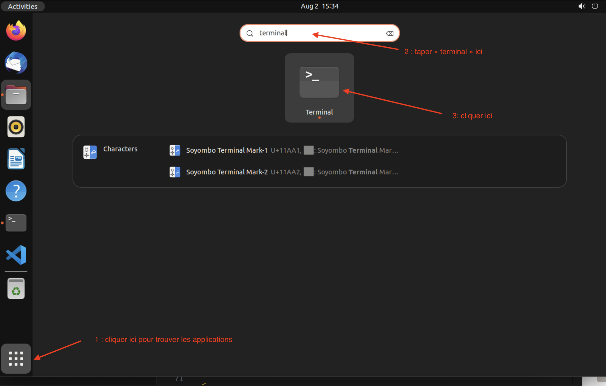
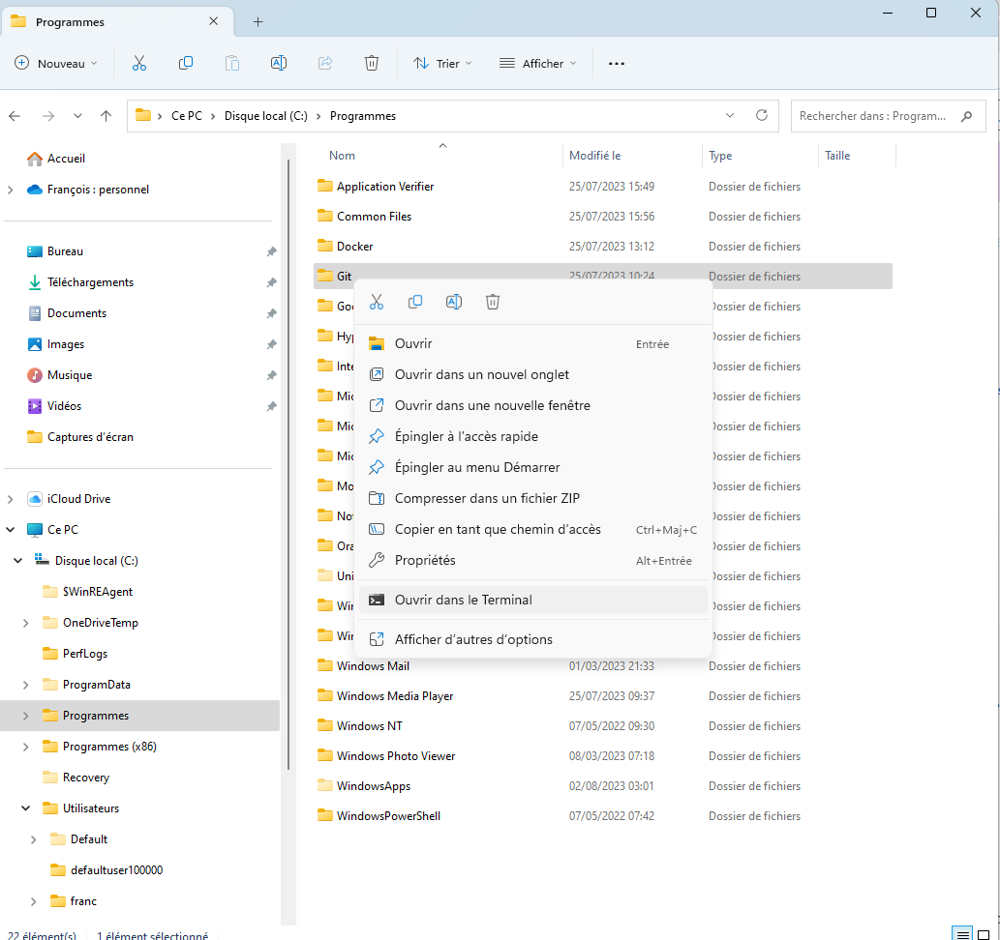
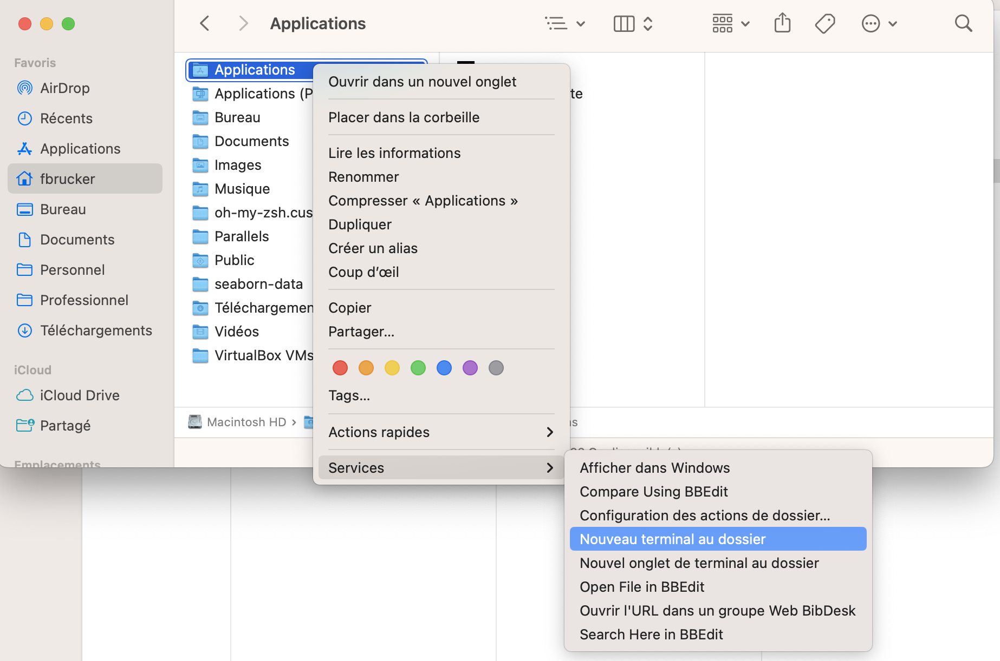
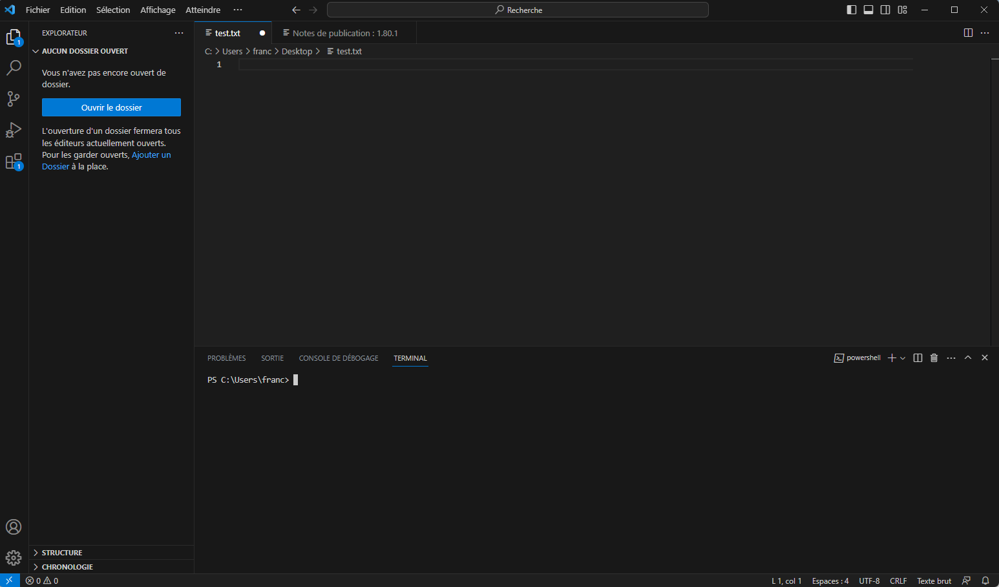
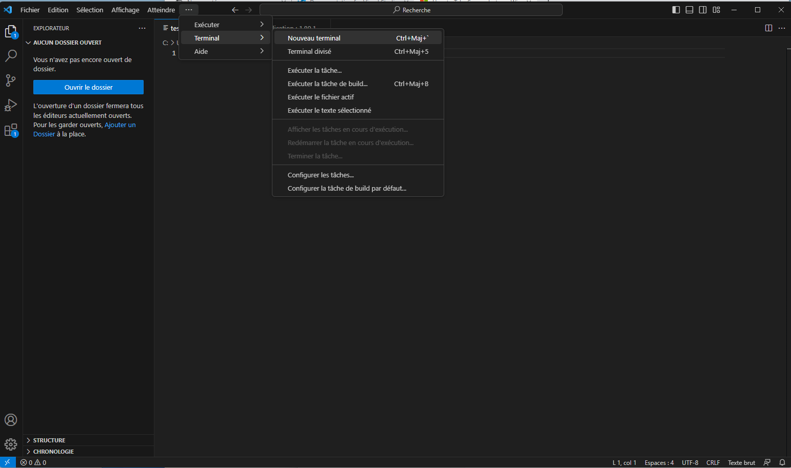
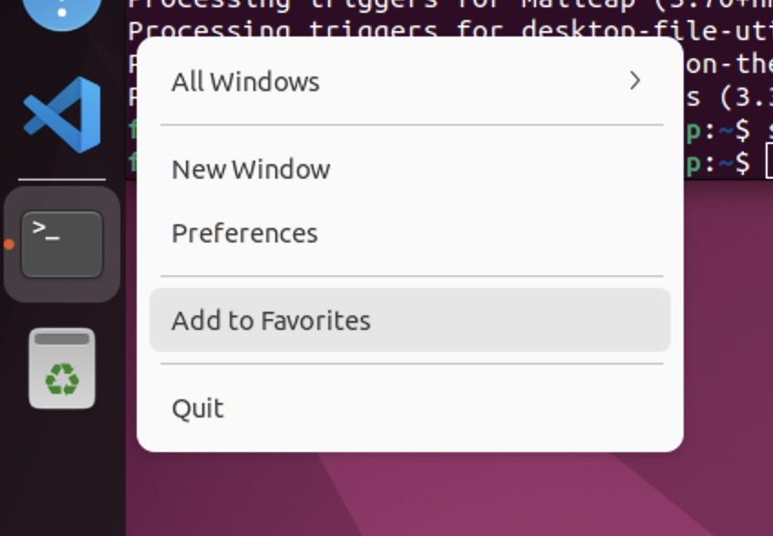
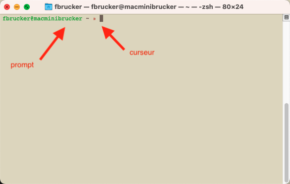
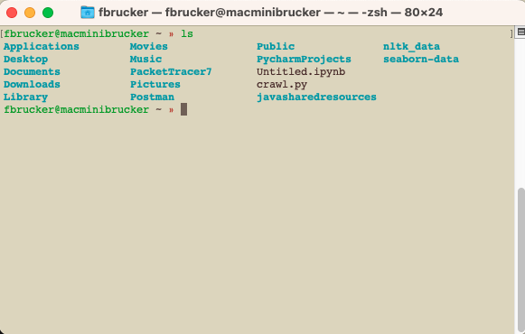
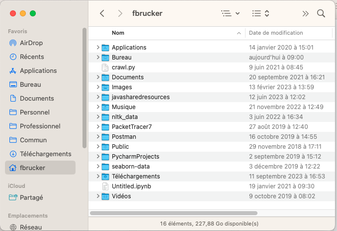
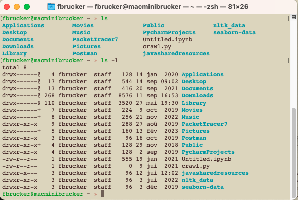

Bases
Qu'est-ce que le terminal ? Comment le trouver et taper des commandes.
Introduction
Le terminal est l'outil utilisé pour taper des commandes qui seront ensuite exécutées par votre ordinateur. On appelle ça le CLI.
Même si cela est intimidant, le CLI est le moyen le plus efficace d'interagir avec votre ordinateur car, contrairement aux applications :
- on peut ajouter des paramètres aux instructions
- on gère facilement les entrées et les sorties des commandes
- c'est automatisable par des scripts.
Enfin, c'est souvent la seule façon d'interagir avec un ordinateur distant.
Vous pouvez a priori utiliser votre ordinateur uniquement avec un terminal. L'interface graphique n'est qu'un ajout sympathique mais non indispensable à l'utilisation d'un ordinateur. Alors bien sur vous n'utiliserez pas le terminal tout le temps mais savoir s'en servir pourra vous faire gagner un temps fou lorsque vous faites de l'informatique.
Utiliser le terminal vous procure en plus ce petit sentiment grisant d'être en prise directe avec la matrice.
Accéder au terminal
Il y plusieurs moyen d'accéder à l'application terminal.
Via des menus
sous Windows 11
sous Windows 11
Dans le menu démarrer choisissez toutes les applications en haut à droite de la fenêtre. Le terminal est à la lettre T :

Le terminal s'appelle aussi parfois powershell, à ne pas confondre avec l'invite de commande (commande cmd) qui est là pour des raisons de compatibilités mais qu'il ne faut jamais utiliser soit même.
sous Macos
sous Macos
l'aide de Mac pour trouver le terminal.
L'application se trouve dans le dossier /Application/utilitaires que l'on peut facilement atteindre avec le finder :
- `menu Aller > utilitaires``
- une nouvelle fenêtre
finderapparaît : double-cliquez sur l'icône "Terminal".
Une fois dans l'application Terminal vous pouvez ouvrir une nouvelle fenêtre dans le menu Shell > Nouvelle Fenêtre > Nouvelle fenêtre avec le profil - ... (les "..." correspondent à votre profil de fenêtre).
sous Linux/Ubuntu
sous Linux/Ubuntu
Rechercher terminal dans les applications :

Vous pouvez aussi utiliser le raccourci clavier global <CTRL> + <ALT> + T :
Via l'explorateur de fichier
L'explorateur de fichier est un moyen simple d'accéder à un terminal directement placé dans le dossier voulu.
sous Windows 11
sous Windows 11
Dans l'explorateur cliquez droit sur le dossier, puis choisissez Ouvrir dans le Terminal :

sous Macos
sous Macos
Dans le finder cliquez droit sur le dossier, puis choisissez services > Nouveau terminal au dossier :

sous Linux/Ubuntu
sous Linux/Ubuntu
Cliquer croit sur un dossier dans l'explorateur et choisissez Open in Terminal :
Via vscode
Vscode est un IDE populaire et très utilisé pour le développement. Il possède son propre terminal auquel on peut très facilement accéder.
Documentation
Ouvrir ou créer un terminal
On peut ouvrir le terminal courant dans : menu Affichage > Terminal
Ce qui donne quelque chose du type :

Les différents panels du dessus du terminal (PROBLEMES, OUTPUT, CONSOLE DE DEBOGAGE et TERMINAL) dans vscode sont des sorties d'autres processus.
on reste donc 99% du temps sur TERMINAL (qui est en sur-brillance).
Supprimer un terminal
On peut supprimer (en cliquant sur la poubelle) et créer (menu Terminal > Nouveau terminal) autant de terminal que l'on le veut. On peut aussi juste fermer la fenêtre du terminal en cliquant sur la croix.
Créer un nouveau terminal
Notez bien que menu Affichage > Terminal ouvre le terminal courant, il n'en recrée pas un. C'est donc la commande à utiliser par défaut pour garder l'historique de ses commandes en utilisant la flèche du haut, qui remets la dernière commande utilisée.
Lorsque vous voulez créer un nouveau terminal, c'est dans menu Terminal > Nouveau Terminal :

Épingler le terminal
Le terminal est super utile, ça vaut le coup d'ajouter un raccourci pour lui, histoire de l'avoir toujours sous la main.
sous Windows 11
sous Windows 11
Cliquer droit sur l’icône terminal dans la barre des taches et cliquer sur Épingler à la barre des tâches :

sous Macos
sous Macos
Avec une fenêtre finder dans le dossier Applications/Utilitaires glisser/déposez l’icône du terminal dans la barre des tâches.
sous Linux/Ubuntu
sous Linux/Ubuntu
Cliquer droit sur l’icône terminal dans la barre des taches et cliquer sur add to favorites:

Utiliser le terminal
Maintenant que vous avez trouvé le terminal, ouvrez une fenêtre terminal :

Vous êtes devant ce qu'on appelle un prompt*, ou invite de commande. Le prompt s'arrête juste avant le curseur, qui marque l'endroit où seront tapées les commandes.
C'est simple à utiliser. On tape une commande, on appuie sur entrée et la commande s'exécute.
Ces commandes peuvent être de 2 types :
- soit des noms de fichiers qui sont exécutables (ce sont des programmes)
- soit des instructions compréhensibles par le terminal comme
ls(si si, c'est compréhensible par le terminal) par exemple.
Le terminal ci-après montre le résultat de la commande ls (on a tapé ls sur le clavier suivie de la touche entrée) :

La commande ls affiche les fichiers du dossier maison. En comparant avec un explorateur de fichier, on voit bien que les fichiers sont identiques :

Les commandes unix ont souvent pleins d'option, par exemple ls permet d'afficher les fichiers en liste avec plein d'informations supplémentaires, en utilisant l'option -l :
